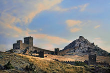
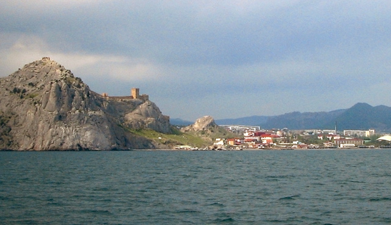

Сидагиос, Сугдея, Солдайя, Сурож, Судак - вода и горный лес. Именно в такой последовательности торговцы видели город, основанный примерно в 212 году. Хотя современные путешественники видят как раз наоборот - сначала горный лес, а только потом вода. Кто только не хозяйничал в городе за его многовековую историю: и византийцы, и греки, и итальянцы, и османы. Период с X по XIII века считается рассветом в истории города - это крупный порт, а в некоторых источниках можно найти упоминание о Судаке как о западной столице шелкового пути.
По мнению Макса Фасмера оно произошло из осет. suǧdæg, и, в свою очередь (Абаев, Василий Иванович), восходит к иранскому suxta-ka — «священный», «чистый», «непорочный», «святой». Отсюда греческое название колонии в Крыму - «Σουγδαία».
В древности город называли по-разному: византийцы — Сидагиос и Сугдея, итальянцы — Солдайя, в древнерусских источниках — Сурож. В османское время город получил название Судак, которое носит и по сей день; тюркская народная этимология отражает характер местности: су -вода, даг - гора.